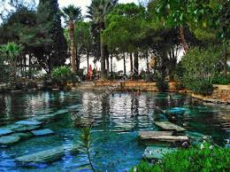
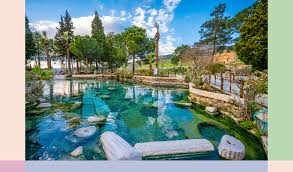

Pamukkale Trevertenlerinin içerisinde bulunan bu harika havuza girilebilmektedir.Milattan sonra 7. yüzyılda deprem sonrası oluşan çukurun içerisini dolduran termal sular bu antik havuzu oluşturmuştur.Roma İmparatorluğu döneminden beri Antik Havuzun suyunun bazı cilt ve dolaşım sorunlarına iyi geldiği düşünülmektedir. Mısır kraliçesi Kleopatra'nın da bu havuzda yüzdüğü rivayet edildiğinden Kleopatra Havuzu olarak anılmaktadır


 "Denizli"ye dönmek için basın
"Denizli"ye dönmek için basın